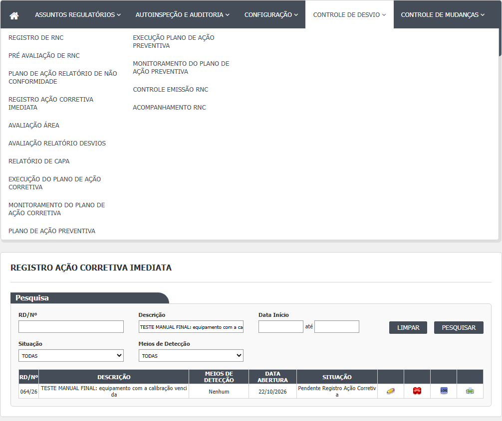
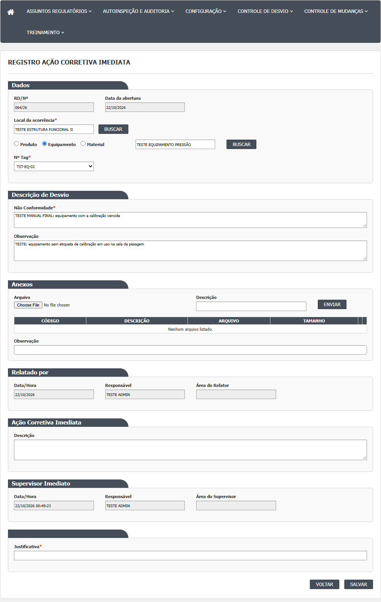
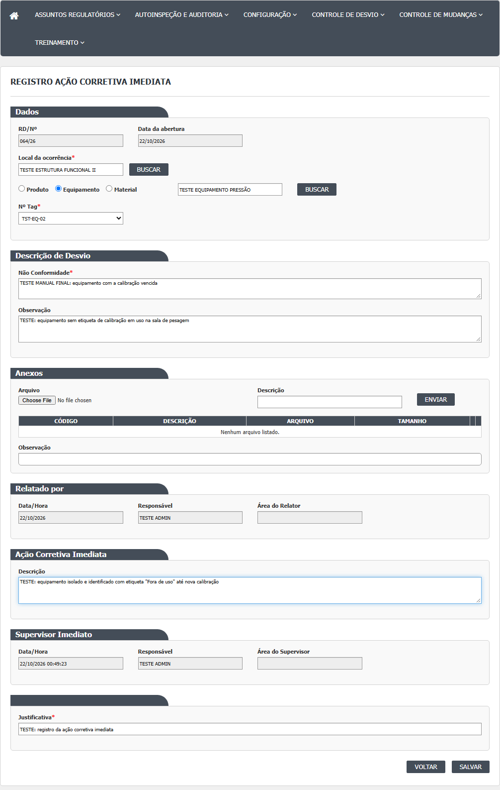
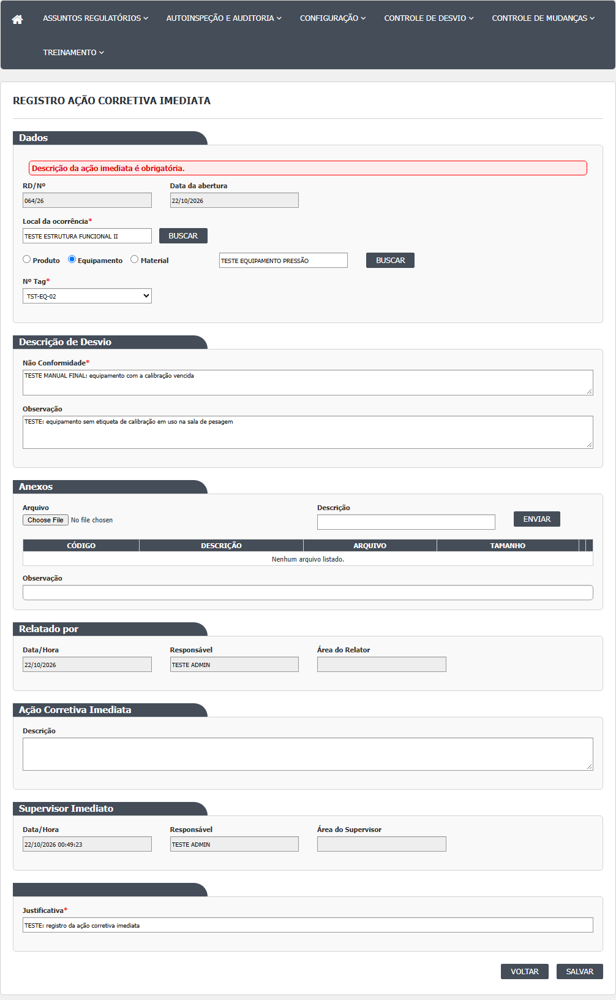
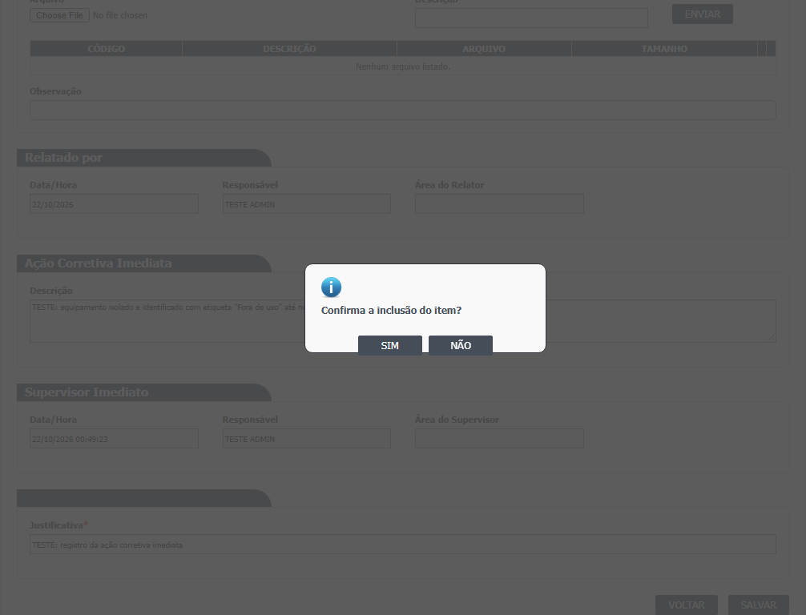
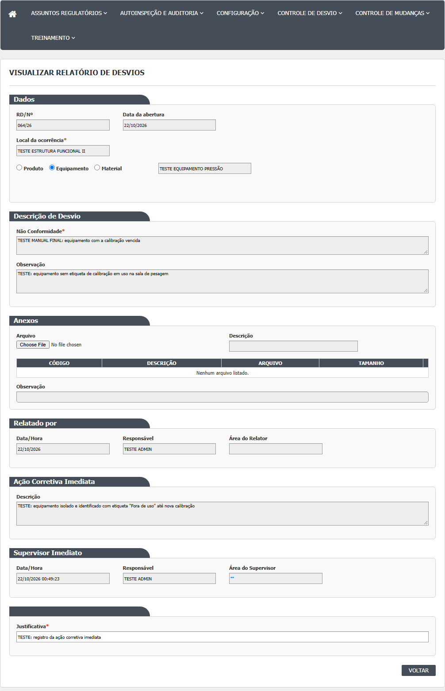
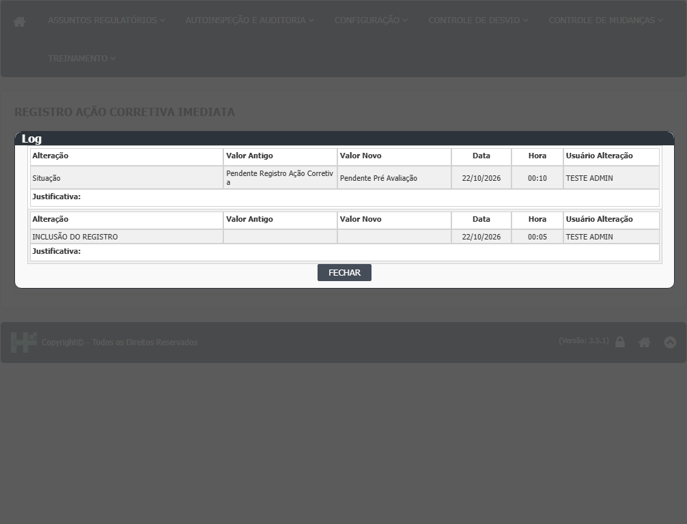

A lista (tela inicial)
- Passo 1. No menu, abra Controle de Desvios › Registro Ação Corretiva Imediata. A tela mostra o quadro "Pesquisa". Não há botão Incluir: esta tela não cria desvios.
- Passo 2. Informe os filtros que quiser, todos opcionais: RD/Nº (formato 000/00), Descrição, Data Início e Data Fim, Situação e Meios de Detecção. O campo Situação tem uma única opção, "Pendente Registro Ação Corretiva". Em Meios de Detecção não existe a opção "Outros". Clique em Pesquisar.
- Passo 3. Sem filtro de situação (TODAS), a lista mostra os desvios em Pendente Registro Ação Corretiva e em Pendente Pré Avaliação. Escolhendo a opção da situação, só os pendentes de ação imediata.
- Passo 4. Colunas: RD/Nº, DESCRIÇÃO, MEIOS DE DETECÇÃO, DATA ABERTURA e SITUAÇÃO. Atenção: se a descrição de algum desvio tiver apóstrofo, a lista fica vazia e a paginação trava (confirmado em 21/10/2026, DV-GQ-017). Ícones por linha: lápis (Editar), lupa (Visualizar, no lugar do lápis quando não é possível editar), lixeira (Cancelar), histórico (Log) e impressora (Imprimir).
- Passo 5. Sem resultado: "A pesquisa não retornou nenhum resultado." Limpar esvazia os filtros e a lista.

Registrar a ação imediata
- Passo 1. Na lista, clique no lápis de um desvio em Pendente Registro Ação Corretiva. Abre a tela "Registro Ação Corretiva Imediata" com o relatório do desvio em cima (local, item, descrição, anexos e quem relatou) e, abaixo, o quadro "Ação Corretiva Imediata".
- Passo 2. Em "Descrição" da ação corretiva imediata, escreva o que foi feito de imediato. A tela não marca este campo com asterisco, mas o servidor exige: em branco, depois de "Confirma a inclusão do item?", aparece "Descrição da ação imediata é obrigatória." (confirmado em 21/10/2026).
- Passo 3. No quadro "Supervisor Imediato", Data/Hora, Responsável e Área do Supervisor aparecem preenchidos e travados com a hora de agora e os dados de quem está conectado.
- Passo 4. No fim da tela, preencha a Justificativa (obrigatória; o campo vem com o texto da última justificativa do desvio, se houver).
- Passo 5. Os campos do relatório de cima (local, tipo e item, lote, descrição, observação, anexos) não ficam travados nesta tela: quem registra a ação pode alterá-los. Só mexa neles com motivo.
- Passo 6. Clique em Salvar. O sistema pergunta "Confirma a inclusão do item?". Responda SIM. Aparece "Alteração efetuada com sucesso." e a tela volta para a lista. O desvio passou para Pendente Pré Avaliação (confirmado em 21/10/2026). Que ele some da opção de situação desta tela não foi conferido.
- Passo 7. Voltar sai sem salvar.
- Atenção. Depois de salvar, o histórico mostra o Responsável do RD trocado para quem registrou a ação (confirmado em 21/10/2026, DV-GQ-035). A justificativa digitada não aparece na coluna Justificativa do histórico.




Cancelar o desvio por esta tela
- Passo 1. Na lista, clique na lixeira de um desvio em Pendente Registro Ação Corretiva. Abre o relatório com todos os campos travados.
- Passo 2. Clique em Salvar (neste caso, o botão confirma o cancelamento). O sistema pergunta "Confirmar o cancelamento do item?". Responda SIM.
- Passo 3. Na janela "Informe a justificativa", escreva o motivo e clique em OK. Sem texto: "A justificativa é obrigatória!".
- Passo 4. Aparece "Cancelamento efetuado com sucesso." O desvio passa a Cancelado. Aqui o cancelamento entra no histórico (diferente da tela Relatório de Desvios). Confirmado em 21/10/2026: o histórico registra a mudança de situação para Cancelado, o responsável pelo cancelamento, o texto da justificativa e a data. Não foi verificado se o texto cai na coluna Justificativa ou só como valor do campo de cancelamento.
Visualizar
- Passo 1. Na lista, clique na lupa. Abre "Visualizar Relatório de Desvios" com os campos travados, o relatório do desvio e o quadro da ação imediata já registrada. Não há botão Salvar.
- Passo 2. Desvios em Pendente Pré Avaliação só podem ser consultados nesta tela.

Histórico e impressão
- Histórico: janela "Log de Alteração", com campo, valor antigo, valor novo, data, hora, usuário e justificativa.
- Imprimir: deveria abrir o relatório do RD (modelo de relatório de RNC) em outra janela; em 21/10/2026 abriu uma página de erro (DV-GQ-018).

Rodada 2 (22/10/2026)
Fonte: execucao/2026-10-22-desvios-rodada-2/resultado.md. Só o que a rodada mostrou de novo.
- Lista, lápis e lixeira. O lápis (registrar a ação) e a lixeira (cancelar) não aparecem para todos os usuários; quem não os vê tem a lupa, mesmo em desvios em Pendente Registro Ação Corretiva (CT-GQ-N02-016). As regras de acesso estão no documento interno. O roteiro dizia que o responsável de área registra a ação; a tela mostrou outra coisa (ver Divergências).
- Cancelar por esta tela, passo 4 (ponto aberto da rodada 1, resolvido). O histórico do desvio cancelado mostra a mudança de situação (de Pendente Registro Ação Corretiva para Cancelado), o nome de quem cancelou, a data do cancelamento e a inclusão. O texto da justificativa aparece como valor novo do campo JustificativaCancelamento, e a coluna Justificativa fica vazia (CT-GQ-N02-020, desvio 018/26).
Rodada 3 (22/10/2026)
Fonte: execucao/2026-10-22-desvios-rodada-3a/resultado.md. Só o que a rodada mostrou de novo ou contrariou.
- Lista (passo 3). Pesquisar com TODAS traz desvios Pendente Registro Ação Corretiva e Pendente Pré Avaliação. Os da pré-avaliação têm só lupa, histórico e impressora, sem lápis nem lixeira (CT-GQ-N02-001 e N02-021). As regras de acesso estão no documento interno.
- Filtros (passo 2). Por RD/Nº e por parte da descrição acha só o desvio certo. Só Data Início 22/10 traz 12 desvios, todos de 22/10; Início e Fim 21/10 trazem 11, todos de 21/10, sem o dia seguinte; só Data Fim é ignorada (26, todos). Limpar esvazia os filtros e também a lista (CT-GQ-N02-005).
- Cancelado some da lista. O desvio cancelado por esta tela deixa de aparecer, porque o filtro de situação não tem a opção Cancelado (CT-GQ-N02-019).
- Registrar a ação, o que está liberado (passo 5). No lápis, local, tipo de item, busca de item, Não Conformidade, Observação e anexos estão editáveis; só número, datas e responsáveis ficam travados. A tela não avisa que o relato original pode ser mudado (CT-GQ-N02-006).
- Registrar a ação, recusas (passos 6 e 7). Ação preenchida e justificativa vazia: "Justificativa é obrigatória." Não Conformidade apagada: "Descrição é obrigatória." (CT-GQ-N02-007 e N02-008).
- Ação com um espaço. A descrição da ação só com um espaço é aceita: "Alteração efetuada com sucesso." e o desvio (079/26) vai para Pendente Pré Avaliação (CT-GQ-N02-010; DV-GQ-055).
- Mudar o relatório junto com a ação. O histórico mostra "Rel. Desvios - Não Conformidade" com valor antigo e novo, mais "Situação" e "Responsável"; a tela não avisa (CT-GQ-N02-015).
- Visualizar depois de salvar. A lupa mostra o quadro da ação com descrição, data e hora, responsável e área, sem Salvar. A área do supervisor aparece entre aspas (por exemplo "TESTE ESTRUTURA FUNCIONAL II"). O histórico traz só o código da ação, não o texto (CT-GQ-N02-011; DV-GQ-036).
- Quem consta como relator. Na lupa desta tela o "Relatado por" é quem criou o desvio. Na lupa do Relatório de Desvios, para o mesmo desvio, passa a ser quem registrou a ação. O histórico registra "Responsável" trocado (CT-GQ-N02-014; DV-GQ-054).
- Cancelar (passo 4 de "Cancelar o desvio por esta tela"). "Confirmar o cancelamento do item?", "Informe a justificativa" e "Cancelamento efetuado com sucesso." O desvio fica Cancelado, sem lápis nem lixeira. O histórico (nesta tela e no Relatório de Desvios) traz Situação, o nome de quem cancelou, a justificativa e a data (CT-GQ-N02-019).
- Busca de item do tipo Produto. Sem resultado, lista vazia (CT-GQ-N02-022; DV-GQ-010).
- Duas janelas no mesmo desvio. Quem salva depois também recebe "Alteração efetuada com sucesso."; a lupa passa a mostrar só o texto da segunda janela e o histórico fica com uma linha de ação e uma de situação (CT-GQ-N02-025; DV-GQ-057).
Rodada 4 (22/10/2026)
Fonte: execucao/2026-10-22-desvios-rodada-4/resultado.md. Só o que a rodada mostrou de novo ou contrariou.
- Filtros. Situação oferece só TODAS e Pendente Registro Ação Corretiva; Meios de Detecção traz TODAS e 6 opções, sem "Outros" (CT-GQ-N02-002 e N02-003).
- Incluir. Não há botão Incluir: esta tela não cria desvios (CT-GQ-N02-004).
- Cancelar. Responder SIM e clicar OK sem escrever a justificativa mostra "A justificativa é obrigatória!". Responder NÃO não muda nada (CT-GQ-N02-017 e N02-018).
- Imprimir. O ícone da impressora abre a página de erro do servidor, não o relatório (CT-GQ-N02-023; DV-GQ-018).
Campos da tela
Lista (filtros e colunas)
| Campo na tela | Tipo | Obrigatório | Regra, limite ou valores possíveis | Fonte (arquivo:linha) |
|---|---|---|---|---|
| RD/Nº | Texto com máscara 000/00 | Não | Número (contém) e ano 20aa, como no Relatório de Desvios. Confirmado em 21/10/2026 (casos CT-GQ-F05 e F16): acha com o número puro e com número e ano. | HSolutions.GQ.UI/Areas/Bloco2/Views/AcaoCorretivaImediataRD/Index.cshtml:27-28; HSolutions.GQ.UI/Areas/Bloco2/Script/AcaoCorretivaImediataIndex.js:6; HSolutions.GQ.UI/Areas/Bloco2/Controllers/AcaoCorretivaImediataRDController.cs:66-76 |
| Descrição | Texto | Não | Contém | HSolutions.GQ.UI/Areas/Bloco2/Views/AcaoCorretivaImediataRD/Index.cshtml:32-33; HSolutions.GQ.UI/Areas/Bloco2/Controllers/AcaoCorretivaImediataRDController.cs:78-79 |
| Data Início | Data dd/mm/aaaa com calendário | Não | Sozinha: um dia. Com Data Fim: período mais o dia seguinte. Confirmado em 21/10/2026 (caso CT-GQ-F07): sozinha filtra só aquele dia. Data inválida (31/02/2026) é ignorada em silêncio, sem mensagem (DV-GQ-027). | HSolutions.GQ.UI/Areas/Bloco2/Views/AcaoCorretivaImediataRD/Index.cshtml:38-40; HSolutions.GQ.UI/Areas/Bloco2/Controllers/AcaoCorretivaImediataRDController.cs:81-93 |
| Data Fim | Data dd/mm/aaaa com calendário | Não | Sozinha: ignorada | HSolutions.GQ.UI/Areas/Bloco2/Views/AcaoCorretivaImediataRD/Index.cshtml:41-44; HSolutions.GQ.UI/Areas/Bloco2/Controllers/AcaoCorretivaImediataRDController.cs:81-93 |
| Situação | Lista | Não | TODAS (padrão) e "Pendente Registro Ação Corretiva". Não há opção para Pendente Pré Avaliação, embora a lista mostre desvios nela | HSolutions.GQ.UI/Areas/Bloco2/Models/AcaoCorretivaImediataRDIndexModel.cs:24-25; HSolutions.GQ.UI/Areas/Bloco2/Controllers/AcaoCorretivaImediataRDController.cs:63-64 |
| Meios de Detecção | Lista | Não | TODAS (padrão); Processo/Produção; Auditoria Interna; Inspeção Sanitária; Controle da Qualidade; Garantia da Qualidade; SAC/Fármaco. Sem "Outros" | HSolutions.GQ.UI/Areas/Bloco2/Models/AcaoCorretivaImediataRDIndexModel.cs:26-45 |
| Colunas RD/Nº, DESCRIÇÃO, MEIOS DE DETECÇÃO, DATA ABERTURA, SITUAÇÃO | Texto (resultado) | Não | Como no Relatório de Desvios. MEIOS DE DETECÇÃO fica "Nenhum" até a Pré Avaliação | HSolutions.GQ.UI/Areas/Bloco2/Script/AcaoCorretivaImediataIndex.js:26-34; HSolutions.GQ.UI/Areas/Bloco2/Models/AcaoCorretivaImediataRDIndexResultadoModel.cs:44-48 |
Formulário: relatório do desvio (mesmo corpo do Relatório de Desvios, sem travas)
| Campo na tela | Tipo | Obrigatório | Regra, limite ou valores possíveis | Fonte (arquivo:linha) |
|---|---|---|---|---|
| RD/Nº | Texto travado | Preenchido sozinho | Formato nnn/aa | HSolutions.GQ.UI/Areas/Bloco2/Views/Shared/_PartialRelatorioDesvio.cshtml:91-92; HSolutions.GQ.UI/Areas/Bloco2/Models/PartialRelatorioDesvioModel.cs:190 |
| Data da abertura | Texto travado | Preenchido sozinho | Data de criação do desvio (só a data) | HSolutions.GQ.UI/Areas/Bloco2/Views/Shared/_PartialRelatorioDesvio.cshtml:95-96; HSolutions.GQ.UI/Areas/Bloco2/Models/PartialRelatorioDesvioModel.cs:264 |
| Local da ocorrência e botão buscar | Texto mais botão | Sim (servidor: código do local diferente de zero) | Busca com 3 ou mais caracteres. Aqui o campo e o botão ficam habilitados: dá para trocar o local do desvio | HSolutions.GQ.UI/Areas/Bloco2/Views/Shared/_PartialRelatorioDesvio.cshtml:102-106; HSolutions.GQ.Domain/Service/RelatorioNaoConformidadeValidator.cs:30-34 |
| Tipo do item | Botões de opção | Não | Produto, Equipamento, Material | HSolutions.GQ.UI/Areas/Bloco2/Views/Shared/_PartialRelatorioDesvio.cshtml:112-127; HSolutions.GQ.UI/Areas/Bloco2/Models/PartialRelatorioDesvioModel.cs:145-158 |
| Item e botão buscar | Texto mais botão | Não | Busca com 3 ou mais caracteres. Para Produto, consulta Estoque e Produção; para Material, Estoque; para Equipamento, Principal | HSolutions.GQ.UI/Areas/Bloco2/Views/Shared/_PartialRelatorioDesvio.cshtml:130-134; HSolutions.GQ.UI/Areas/Bloco2/Controllers/AcaoCorretivaImediataRDController.cs:468-542 |
| Nº Lote, Nº Tag, Registro de entrada, Adicionar e grade de lotes | Listas, botão e grade | Só visual | Como no Relatório de Desvios | HSolutions.GQ.UI/Areas/Bloco2/Views/Shared/_PartialRelatorioDesvio.cshtml:142-181 |
| Não Conformidade | Texto longo | Sim (servidor) | Descrição do desvio, editável aqui. Texto vazio é recusado; um espaço passa | HSolutions.GQ.UI/Areas/Bloco2/Views/Shared/_PartialRelatorioDesvio.cshtml:191-192; HSolutions.GQ.Domain/Service/RelatorioNaoConformidadeValidator.cs:24-28 |
| Observação do desvio | Texto longo | Não | Livre | HSolutions.GQ.UI/Areas/Bloco2/Views/Shared/_PartialRelatorioDesvio.cshtml:198-199 |
| Arquivo, Descrição e Enviar (anexos), grade e Observação dos anexos | Seleção de arquivo, texto, botão e grade | Arquivo e descrição para enviar | Como no Relatório de Desvios. Em Visualizar a área de envio some | HSolutions.GQ.UI/Areas/Bloco2/Views/Shared/_PartialRelatorioDesvio.cshtml:208-235; HSolutions.GQ.UI/Areas/Bloco2/Views/AcaoCorretivaImediataRD/Visualizar.cshtml:21-24 |
| Relatado por: Data/Hora | Texto travado | Preenchido sozinho | Data de criação do desvio | HSolutions.GQ.UI/Areas/Bloco2/Views/Shared/_PartialRelatorioDesvio.cshtml:244-245; HSolutions.GQ.UI/Areas/Bloco2/Models/PartialRelatorioDesvioModel.cs:264 |
| Relatado por: Responsável | Texto travado | Preenchido sozinho | Nome de quem criou o desvio | HSolutions.GQ.UI/Areas/Bloco2/Views/Shared/_PartialRelatorioDesvio.cshtml:249-250; HSolutions.GQ.UI/Areas/Bloco2/Models/PartialRelatorioDesvioModel.cs:263 |
| Relatado por: Área do Relator | Texto travado | Preenchido sozinho | Área gravada no desvio (que passa a ser a de quem registrou a ação, depois de salvar). Em 21/10/2026 o Responsável do RD passou a ser quem registrou a ação (DV-GQ-035). | HSolutions.GQ.UI/Areas/Bloco2/Views/Shared/_PartialRelatorioDesvio.cshtml:254-255; HSolutions.GQ.UI/Areas/Bloco2/Controllers/AcaoCorretivaImediataRDController.cs:178-179 |
Formulário: ação imediata, justificativa e botões
| Campo na tela | Tipo | Obrigatório | Regra, limite ou valores possíveis | Fonte (arquivo:linha) |
|---|---|---|---|---|
| Ação Corretiva Imediata: Descrição | Texto longo (4 linhas) | Sim (servidor); sem asterisco na tela | Mensagem se vazio: "Descrição da ação imediata é obrigatória." Sem limite de tamanho no código; coluna NVARCHAR(MAX). Confirmado em 21/10/2026 (caso CT-GQ-008): em branco, aparece a mensagem acima. | HSolutions.GQ.UI/Areas/Bloco2/Views/Shared/_PartialRelatorioDesvio.cshtml:278-279; HSolutions.GQ.Domain/Service/AcaoCorretivaImediataRDValidator.cs:24-28; Hsolutions.GQ.DB/Tables/TBL_ACAO_CORRETIVA_IMEDIATA.sql |
| Supervisor Imediato: Data/Hora | Texto travado | Preenchido sozinho | Hora de agora quando a ação ainda não existe. É o valor gravado como data da ação (vem da tela) e só é enviado no primeiro registro. Em 21/10/2026 o valor alterado antes de salvar foi gravado como data da ação e aparece na tela Pré Avaliação. | HSolutions.GQ.UI/Areas/Bloco2/Views/Shared/_PartialRelatorioDesvio.cshtml:292-293; HSolutions.GQ.UI/Areas/Bloco2/Models/PartialRelatorioDesvioModel.cs:257-260; HSolutions.GQ.UI/Areas/Bloco2/Script/PartialRelatorioDesvio.js:310-315; HSolutions.GQ.UI/Areas/Bloco2/Controllers/AcaoCorretivaImediataRDController.cs:193 |
| Supervisor Imediato: Responsável | Texto travado | Preenchido sozinho | Nome de quem está conectado; o nome gravado é o enviado pela tela, e o código do responsável vem do usuário conectado | HSolutions.GQ.UI/Areas/Bloco2/Views/Shared/_PartialRelatorioDesvio.cshtml:297-298; HSolutions.GQ.UI/Areas/Bloco2/Controllers/AcaoCorretivaImediataRDController.cs:195-196 |
| Supervisor Imediato: Área do Supervisor | Texto travado | Preenchido sozinho | Área de quem está conectado; o servidor grava a área do usuário conectado | HSolutions.GQ.UI/Areas/Bloco2/Views/Shared/_PartialRelatorioDesvio.cshtml:302-303; HSolutions.GQ.UI/Areas/Bloco2/Controllers/AcaoCorretivaImediataRDController.cs:197-198 |
| Justificativa | Texto | Sim (servidor) | Aparece em Editar (desvio já existe). Vem preenchida com a justificativa anterior. Exigida mesmo ao registrar a ação pela primeira vez | HSolutions.GQ.UI/Areas/Bloco2/Views/Shared/_PartialRelatorioDesvio.cshtml:835-848; HSolutions.GQ.Domain/Service/RelatorioNaoConformidadeValidator.cs:36-43; HSolutions.GQ.UI/Areas/Bloco2/Controllers/AcaoCorretivaImediataRDController.cs:175 |
| Justificativa do cancelamento | Texto (janela) | Sim na janela; o servidor desta tela não exige | "Informe a justificativa", com OK. Sem texto: "A justificativa é obrigatória!" | HSolutions.GQ.UI/Views/Shared/_ModalJustificativa.cshtml:3-15, 20-42; HSolutions.GQ.UI/Areas/Bloco2/Controllers/AcaoCorretivaImediataRDController.cs:364-381 |
| Voltar e Salvar | Botões | Não | Salvar não aparece em Visualizar (o script o remove) | HSolutions.GQ.UI/Areas/Bloco2/Views/Shared/_PartialRelatorioDesvio.cshtml:853-860; HSolutions.GQ.UI/Areas/Bloco2/Views/AcaoCorretivaImediataRD/Visualizar.cshtml:21-24 |
| Campos ocultos | Controle interno | Não | hfId, hfEAcaoImediata (true quando ainda não há ação), hfDisableFields, hfActionType e outros | HSolutions.GQ.UI/Areas/Bloco2/Views/Shared/_PartialRelatorioDesvio.cshtml:75-82 |
Rodada 2 (22/10/2026)
- Sem campo novo ou diferente nesta rodada. Os campos do formulário não foram exercitados.
Rodada 3 (22/10/2026)
- Descrição da ação imediata. Um espaço basta para passar (RN-GQ-D02-021; DV-GQ-055).
- Campos do relatório (local, item, Não Conformidade, Observação e anexos). Editáveis nesta tela; só número, datas e responsáveis são travados (RN-GQ-D02-024).
- Área do Supervisor e data do relato (Visualizar). A área vem entre aspas e a data do relato sem hora (RN-GQ-D02-026).
- Relatado por. Mostra o autor do relato nesta tela e quem registrou a ação na tela Relatório de Desvios (RN-GQ-D02-025; DV-GQ-054).
Rodada 4 (22/10/2026)
Fonte: execucao/2026-10-22-desvios-rodada-4/resultado.md. Só o que a rodada mostrou de novo ou contrariou.
- Situação (filtro): só TODAS e Pendente Registro Ação Corretiva (CT-GQ-N02-002).
- Meios de Detecção (filtro): TODAS mais 6 opções, sem "Outros" (CT-GQ-N02-003).
Botões e ações
| Botão ou ação | Quando aparece | O que faz | Para onde leva o desvio | Fonte |
|---|---|---|---|---|
| Pesquisar | Sempre | Carrega os desvios em Pendente Registro Ação Corretiva e em Pendente Pré Avaliação que combinam com os filtros | Não muda o desvio | HSolutions.GQ.UI/Areas/Bloco2/Controllers/AcaoCorretivaImediataRDController.cs:49-125 |
| Limpar | Sempre | Esvazia os filtros e a lista | Não muda | HSolutions.GQ.UI/Areas/Bloco2/Script/AcaoCorretivaImediataIndex.js:90-98 |
| Editar (lápis) | Desvio em Pendente Registro Ação Corretiva e usuário que pode registrar a ação (regra no documento interno) | Abre a tela de registro da ação imediata | Pendente Pré Avaliação ao salvar | HSolutions.GQ.UI/Helpers/GerenciadorAcessoTelaAcaoCorretivaImediataRDIndex.cs:13-31; HSolutions.GQ.UI/Areas/Bloco2/Controllers/AcaoCorretivaImediataRDController.cs:129-158 |
| Visualizar (lupa) | Quando Editar não aparece: desvio em Pendente Pré Avaliação, ou usuário que não pode registrar | Abre a consulta | Não muda | HSolutions.GQ.UI/Scripts/HSGridApi.js:277-290; HSolutions.GQ.UI/Areas/Bloco2/Controllers/AcaoCorretivaImediataRDController.cs:397-424 |
| Cancelar (lixeira) | Mesmas condições do Editar | Abre a tela de cancelamento | Cancelado (depois da confirmação e da justificativa) | HSolutions.GQ.UI/Helpers/GerenciadorAcessoTelaAcaoCorretivaImediataRDIndex.cs:34-50; HSolutions.GQ.UI/Areas/Bloco2/Script/AcaoCorretivaImediataIndex.js:43-46, 102-104 |
| Histórico (Log) | Sempre que a linha aparece | Abre "Log de Alteração" | Não muda | HSolutions.GQ.UI/Areas/Bloco2/Script/AcaoCorretivaImediataIndex.js:47-50; HSolutions.GQ.UI/Areas/Bloco2/Models/AcaoCorretivaImediataRDIndexResultadoModel.cs:53 |
| Imprimir | Sempre que a linha aparece | Abre o relatório de RNC em outra janela. Em 21/10/2026 abriu página de erro em vez do relatório (DV-GQ-018). | Não muda | HSolutions.GQ.UI/Areas/Bloco2/Controllers/AcaoCorretivaImediataRDController.cs:427-454 |
| Salvar (registrar a ação) | Tela de registro, desvio em Pendente Registro Ação Corretiva | Pergunta "Confirma a inclusão do item?"; valida; grava a ação como registro novo, atualiza também os dados do relatório; grava histórico | Pendente Pré Avaliação | HSolutions.GQ.UI/Areas/Bloco2/Script/PartialRelatorioDesvio.js:377-378, 401; HSolutions.GQ.UI/Areas/Bloco2/Controllers/AcaoCorretivaImediataRDController.cs:161-326 |
| Salvar (cancelar) | Tela de cancelamento | Pergunta "Confirmar o cancelamento do item?" e pede a justificativa; grava Cancelado com quem, quando e o motivo; grava histórico | Cancelado | HSolutions.GQ.UI/Areas/Bloco2/Script/PartialRelatorioDesvio.js:380-384; HSolutions.GQ.UI/Areas/Bloco2/Controllers/AcaoCorretivaImediataRDController.cs:364-393 |
| buscar, Adicionar, Excluir lote, Enviar, Excluir e Abrir anexo | Tela de registro | Como no Relatório de Desvios (os dados do relatório podem ser alterados aqui) | Não muda até salvar | HSolutions.GQ.UI/Areas/Bloco2/Script/PartialRelatorioDesvio.js:576-938 |
| Voltar | Sempre | Volta à lista sem salvar | Não muda | HSolutions.GQ.UI/Areas/Bloco2/Script/PartialRelatorioDesvio.js:389-392 |
Rodada 2 (22/10/2026)
- Editar (lápis) e Cancelar (lixeira): não aparecem para todos os usuários, e a lupa aparece no lugar (RN-GQ-D02-020; CT-GQ-N02-016). As regras de acesso estão no documento interno.
Rodada 3 (22/10/2026)
- Salvar (registrar a ação): com a ação só com um espaço, "Alteração efetuada com sucesso."; salvar de novo numa segunda janela, o mesmo (DV-GQ-055 e DV-GQ-057).
- Limpar: esvazia os filtros e a lista (CT-GQ-N02-005).
- Cancelar: confirmação, justificativa e sucesso como descrito; o desvio sai da lista da tela (RN-GQ-D02-023).
Rodada 4 (22/10/2026)
Fonte: execucao/2026-10-22-desvios-rodada-4/resultado.md. Só o que a rodada mostrou de novo ou contrariou.
- Incluir: não existe nesta tela (CT-GQ-N02-004).
- Imprimir: abre a página de erro do servidor (CT-GQ-N02-023; DV-GQ-018).
- Cancelar, janela de justificativa: OK sem texto mostra "A justificativa é obrigatória!"; NÃO fecha sem mudar nada (CT-GQ-N02-017 e N02-018).
Mensagens do sistema
| Mensagem (texto exato do código) | Quando aparece | Fonte |
|---|---|---|
| Confirma a inclusão do item? | Ao clicar Salvar para registrar a ação | HSolutions.GQ.UI/Areas/Bloco2/Script/PartialRelatorioDesvio.js:377 |
| Confirmar o cancelamento do item? | Ao clicar Salvar na tela de cancelamento (confirmado em 21/10/2026, caso CT-GQ-007) | HSolutions.GQ.UI/Areas/Bloco2/Script/PartialRelatorioDesvio.js:381 |
| Informe a justificativa | Janela depois da confirmação do cancelamento | HSolutions.GQ.UI/Views/Shared/_ModalJustificativa.cshtml:22 |
| A justificativa é obrigatória! | OK da janela de justificativa sem texto (confirmado em 21/10/2026, caso CT-GQ-007) | HSolutions.GQ.UI/Views/Shared/_ModalJustificativa.cshtml:13 |
| Alteração efetuada com sucesso. | Ação registrada (a mensagem fala em alteração, não em inclusão da ação) (confirmado em 21/10/2026) | HSolutions.GQ.UI/Areas/Bloco2/Controllers/AcaoCorretivaImediataRDController.cs:305 |
| Cancelamento efetuado com sucesso. | Desvio cancelado por esta tela (confirmado em 21/10/2026, caso CT-GQ-007) | HSolutions.GQ.UI/Areas/Bloco2/Controllers/AcaoCorretivaImediataRDController.cs:380 |
| Descrição da ação imediata é obrigatória. | Salvar sem descrição da ação (confirmado em 21/10/2026, caso CT-GQ-008) | HSolutions.GQ.Domain/Service/AcaoCorretivaImediataRDValidator.cs:26 |
| Descrição é obrigatória. | Salvar com a Não Conformidade apagada | HSolutions.GQ.Domain/Service/RelatorioNaoConformidadeValidator.cs:26 |
| Local de Ocorrência é obrigatório. | Salvar com local sem código | HSolutions.GQ.Domain/Service/RelatorioNaoConformidadeValidator.cs:32 |
| Justificativa é obrigatória. | Salvar sem Justificativa | HSolutions.GQ.Domain/Service/RelatorioNaoConformidadeValidator.cs:40 |
| O Anexo é obrigatório. | Anexo sem arquivo ou sem descrição | HSolutions.GQ.Domain/Service/RelatorioNaoConformidadeValidator.cs:58, 64 |
| A Data de criação é obrigatória. | Data de criação mínima (a tela não mostra) | HSolutions.GQ.Domain/Service/RelatorioNaoConformidadeValidator.cs:72 |
| O Responsavel é obrigatório. | Responsável vazio (a tela não mostra) | HSolutions.GQ.Domain/Service/RelatorioNaoConformidadeValidator.cs:78 |
| Entidade de domínio não pode ser nula. | Registro inexistente na validação | HSolutions.GQ.Domain/Service/AcaoCorretivaImediataRDValidator.cs:17 |
| Local ocorrência: digite no minímo 3 caracteres. | Buscar local com menos de 3 caracteres | HSolutions.GQ.UI/Areas/Bloco2/Script/PartialRelatorioDesvio.js:600 |
| Item: digite no minímo 3 caracteres. | Buscar item com menos de 3 caracteres | HSolutions.GQ.UI/Areas/Bloco2/Script/PartialRelatorioDesvio.js:706 |
| Arquivo enviado com sucesso. | Anexo enviado | HSolutions.GQ.UI/Views/Shared/_UploadArquivo.cshtml:44 |
| Nenhuma informação foi enviada. / O arquivo não foi informado. / A descrição não foi informada. | Falhas ao enviar anexo | HSolutions.GQ.UI/Controllers/UploadController.cs:127-129 |
| A pesquisa não retornou nenhum resultado. | Lista sem registros | HSolutions.GQ.UI/Scripts/HSGridApi.js:209, 625 |
| Ocorreu um erro inesperado. | Erro não previsto ao registrar, cancelar ou abrir Editar, Cancelar ou Visualizar | HSolutions.GQ.UI/Controllers/GQControllerBase.cs:93; HSolutions.GQ.UI/Areas/Bloco2/Controllers/AcaoCorretivaImediataRDController.cs:155, 323, 357, 390 |
| Não foi possível obter os relatórios de não conformidades | Erro ao pesquisar a lista | HSolutions.GQ.UI/Areas/Bloco2/Controllers/AcaoCorretivaImediataRDController.cs:123 |
| Não foi possível imprimir o RNC | Erro ao gerar o relatório | HSolutions.GQ.UI/Areas/Bloco2/Controllers/AcaoCorretivaImediataRDController.cs:452 |
| Server Error ... The device is not ready (System.IO.IOException) | Página de erro ao imprimir pelo ícone da impressora da lista (observada em 21/10/2026, DV-GQ-018) | Texto vindo do servidor, fora do código analisado |
Rodada 2 (22/10/2026)
- Nenhuma mensagem nova ou diferente apareceu nesta tela. No cancelamento do desvio 018/26 valeram as mesmas mensagens já confirmadas em 21/10/2026.
Rodada 3 (22/10/2026)
- Vistas na tela com o texto igual ao do código: "Justificativa é obrigatória.", "Descrição é obrigatória.", "Alteração efetuada com sucesso.", "Confirmar o cancelamento do item?", "Informe a justificativa" e "Cancelamento efetuado com sucesso."
- "Descrição da ação imediata é obrigatória." só aparece com a ação vazia; com um espaço a tela aceita (DV-GQ-055). Nenhuma mensagem nova ou diferente do código apareceu.
Rodada 4 (22/10/2026)
Fonte: execucao/2026-10-22-desvios-rodada-4/resultado.md. Mensagens vistas na tela, com o texto exato.
- "A justificativa é obrigatória!" (cancelamento, OK sem texto; CT-GQ-N02-017).
- "Confirma a inclusão do item?" e "Alteração efetuada com sucesso." (registro da ação; CT-GQ-N02-024).
- Imprimir mostra a página de erro do servidor no lugar do relatório (CT-GQ-N02-023).